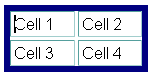
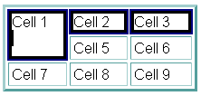
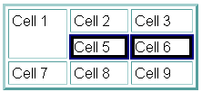
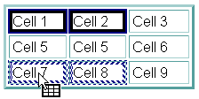
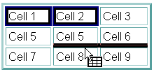
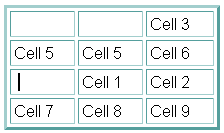

|
|
Composer Table Editing
Summary of new direct table editing features:
| User Action |
Mouse Hit
Region |
Modifier Key
Pressed |
Cursor |
Status Message
|
| Select Table |
Upper left corner of table |
no |
|
"Select table (Press Ctrl to select all cells instead)" |
| Select All Cells in Table |
Upper left corner of table |
yes |
|
"Select all cells in table" |
| Select Cell |
Top border of cell |
no |
|
"Select or deselect cell" |
| Anywhere inside a cell |
yes |
|
" |
| Drag Selected Cells |
Anywhere inside any selected cell |
no |
|
"Relocate caret or drag selected table or cells" |
| Select Row |
Near left border of
table to the left of row |
no
|
|
"Select all cells in row" |
| Append to Selected Rows |
yes |
|
|
| Select Column |
Near top border of table above
column |
no
|
|
"Select all cells in column" |
| Append to Selected Columns |
yes
|
|
" |
| Size Column Width |
Near right border of any cell in column |
no |
|
"Drag to change width of column to the left" |
| Size Row Height |
Near bottom border of any cell in row |
no |
|
"Drag to change height of row above" |
| Size Table Width |
Near right table border |
yes |
|
"Drag to change width of table" |
| Size Table Height |
Near bottom table border |
yes |
|
"Drag to change height of table" |
| Add Rows |
Lower left corner of table |
no |
|
"Drag down to add more rows to the table" |
| Add Columns |
Lower right corner of table |
no |
|
"Drag right to add more columns to the table" |
Description:
-
The "User Action" is what happens when mouse goes down when the cursor
looks like the icon shown. Sizing and dragging involve moving the cursor
with the mouse down, of course. There are two general "User Rules":
-
Watch your cursor! As you mouse over the table, the cursor tells
you what action is possible. There should be a status message in the usual
area at the window bottom to help the user understand what action is possible.
(These are XP strings and should be used by all FEs). Kathy:
can the Mac do this?
-
Press the modifier key and watch the cursor and status line.
If the cursor changes, a different action is possible and the status information
should communicate that.
-
Selecting a single object is just a single click.
Other selection behavior:
-
A selected table should show a single highlighted border around the entire
table:

Selected cells should show highlighting around each cell individually.
-
For the purpose of selection (as well as in the Cell property dialog),
a "column" is all cells sharing the same left border (X value), and a row
is all cells sharing the same top border (Y value.) Thus cells with COLSPAN
> 1 or ROWSPAN >1 will be not be included in the spanned column or row
(i.e., they are only members of one row or column - the one matching their
top or left edge respectively.)

1st row 2nd
row
-
Multiple cells can be selected by holding the "Modifier key" (Ctrl in Windows
an UNIX, Cmd on the Mac) and clicking on non-contiguous cells. A cell already
selected will be unselected if the modifier is down when user clicks. Non-contiguous
rows or columns can also be selected by holding down the Modifier key when
clicking on a second row or column hit region after the initial selection.
(You cannot unselect a row or column in this way, however.)
-
Another way to select multiple cells is to place the caret in a cell, then
drag into a neighboring cell -- as soon as the cursor leaves the first
cell, any text selected is unselected, and we go into "cell selection mode."
As the mouse is dragged with the mouse button is still down, a set of cells
can be selected or unselected starting with the initial cell as the upper
left corner, and the cell under the cursor as the lower-right cell in the
rectangle.
-
Multiple columns or rows can also be selected by clicking on the appropriate
area to select the initial row or column, then dragging: left/right for
more columns, or up/down for more rows.
-
Whenever one or more cells or the table are selected, there is also the
blinking caret. Selecting a table or one or more cells will move the caret
into the table, usually in the top-left cell of the selection. When the
user starts typing, the table or cell selection should disappear and the
characters are input at the caret location. There should never be
the usual selection style for text or other objects visible at the same
time as selected cells or tables. There may be more than one cell selected
in a table, of course, but never in different tables within the same page.
-
Whenever the user clicks the mouse and is not on a cell or table selection
hit area, the caret should be moved (or non-table object selected) and
cell or table selection should be removed.
-
The "Mouse Hit Regions" depend on the intercell
spacing, border thickness, and intracell padding values.
-
In general, the sizing selection regions try to use as much of the intracell
("Cell padding") and intercell space ("Cell spacing") to avoid conflicting
with the user's attempt to place a caret in the text within a cell.
-
When there is intercell spacing, that region is available for sizing a
row or columns, so there is less area within the cell that is used.
-
The user should be able to place the caret in any of the four corners of
a cell, and along the entire left border (just to the right of the border).
These corners are excluded from the table-hit regions to facilitate caret
placement.
-
The most difficult condition to select and size cells is when the table
border, cell spacing, and cell padding values are all zero. This is used
when the purpose of the table is to layout regions of the page akin to
a "desktop publishing" program. We advise users to keep some Spacing and
Padding while editing and data entry, then convert to the zero values when
finished.
-
When a cell has no border, Composer shows the cell boundary with a single-pixel
dashed line. This is controlled by the "Table Border" setting in the Table
Properties dialog. When the table has a border width > 0, the cell has
a 1-pixel visible border. The exception is an empty cell, which will not
display its borders at all (as well as not displaying the background color
or image.) In that case, the dashed line should be displayed to indicate
this condition to the user. (A single space will cause the border to display
- see next topic.)
-
Automatic filling in of new
empty cells with spaces
-
There is a hidden preference (editor.new_cell_has_space), whose default
value is YES. A single space is placed in any cell created in Composer,
such as when new tables, rows, columns, or cells are inserted by
the user, or automatically when padding rows or columns after pasting cells
(to keep the table geometry regular.). This allows the border, background
color, and background image to display in the Browser.
-
Cells that are pasted into the page, or when the page is initially loaded,
are not affected - completely empty cells will not have the space automatically
inserted.
-
A user can remove this space by using the delete key.
-
What to do with selected cells
or table
-
Once a set of cells is selected, any character or paragraph formating action
will apply to the contents of each selected cell.
-
The background color of a selected table or any set of selected cells can
be quickly changed by holding down the Alt key and clicking on the color
widget on the toolbar. (The tooltip and status line help describe the availability
of this otherwise hidden feature.)
This is currently implemented only on Windows [Do
we plan to support it on Mac and UNIX?]
-
In the case of a selected table, all formating actions are the same as
if all cells in the table are selected except for alignment.
If alignment is changed using the toolbar drop-down button bar, or from
the Format | Align menu, this will change the horizontal alignment of the
table relative to the Composer window. To set the alignment of the contents
in all cells, select all cells in the table first.
-
The delete key will delete the contents of all selected cells. If all the
cells in a row or column are deleted, the row or column boundaries will
also be deleted. This is done to not upset the geometry of the table when
only a partial row or column is deleted. If the table is deleted, the entire
table should be completed deleted
-
The usual copy and cut commands are also available. The same rules for
the delete key apply for deleting contents-only or entire rows, columns,
or the table.
-
Sizing behavior
-
When a sizing icon is visible, click and drag to resize a column, row,
or the table. The item to be sized does not have to be selected
first, although that should not interfere with the ability to size.
-
As the cursor is dragged, information about the changing in size should
be displayed in the status area. For example: "Width = 43 pixels, 53% of
previous width."
-
Sizing a column or row will set the width (for columns) or height (for
rows) of all cells in that column or row. For the purpose of sizing, the
"column" is all cells sharing the same right border location (X value)
and a "row" is all cells sharing the same bottom border location (Y value.)
Note that this is different from the concept of a column or cell for the
purpose of selection.
-
When a column or row is sized, this changes the dimensions for all cells
involved, and the parent table, to Pixel mode. This is the only way to
control the sizing, that is, to have the size as close as possible to where
the user lifts the mouse button when done, because of the limitations of
how table layout works in HTML 3.2.
-
In previous versions, the only direct sizing that was possible was sizing
the entire table's width. In Gromit, this is deliberately less discoverable
(the Modifier Key must be pressed) because of the difficulty to do table
sizing under HTML 3.2, and to reduce accidental confusion between sizing
the table or sizing the last row or column in the table. When sizing the
table width or height, all cells are temporarily converted to "Percent
mode", then converted back to the previous mode after sizing and relayout
is finished. If we didn't do this, the table would most likely not
resize correctly, especially when reducing the width or height, if any
of the cells already had width or height already set, and it would cause
much more distortion in the column widths or row heights. This is another
good reason to make direct table sizing a rare thing -- sizing individual
columns and rows should be preferred by most users.
-
Adding more rows or columns by dragging the bottom left or right corners
is related to sizing the table. Visual feedback should be given to show
the number of rows or columns being added, as well as numeric information
on the status line, e.g.: "Add 2 row(s) to the table"
-
Pasting and Tables
-
Text and other HTML objects can be pasted into a table just as before.
If any cells or table are selected, non-table data on the clipboard should
not replace the selected cells' contents, but it will insert the clipboard
data at the location of the blinking caret.
-
When cells are copied to the clipboard, they are formated into a table.
Thus any set of cells that are cut or copied and then pasted into a page
at a location not inside an existing table will insert a new table
at the insert caret location. If text or HTML objects are selected, they
will be deleted and replaced by the pasted table.
-
The table clipboard data also records the type of source data was: a full
table, row(s), column(s) or arbitrary selected cells. Default behavior
when pasting table data into an existing table are designed to avoid asking
the user how they want to format the paste:
-
If the caret is in a cell, but no cells are selected, the cells will be
inserted as a row above the current row if the source type is row, or as
a column before the current column if the source type is any other type.
-
If cells in a table are selected, the source data will be "poured" into
the table replacing the selected cells in a "left to right" first fashion
until all selected cells are replaced or there is no more source cells.
Selected cells not replaced will not have their contents deleted. If there
are more source cells than selected cells, a message box should appear
telling the user "Not all cells in source were pasted".
-
More precise pasting is available using the menus: When table data is available
on the clipboard and the caret is in a table or cells are selected, the
Table menu and the Context/Popup menu contains a submenu: "Paste into Table."
(It is greyed out in the Table menu if not appropriate.) It has the following
items:
-
Nested Table
-
Above current Row
-
Below current Row
-
Before current Column
-
After current Column
-
"Replace" if no cells are selected, or "Replace Selected Cells" if cells
are selected.
-
"Replace Selected Cells" acts like the default action described above.
-
"Replace" replaces cells starting with the cell with the caret, and replacing
cells according to the geometry (pattern of cells and rows) of the source
data.
-
Drag and Drop behavior (Windows only?)
-
When table cells are dragged, the cell data ends up on the clipboard just
like copying does. Dropping the data is the similar to pasting. During
the drag process, a cursor icon should show the user what is being dragged: This
is the same as earlier versions, including the addition of a "+" to the
icon when the drop will end up copying the source (In Windows: when dragging
into a different Composer window, or when the Ctrl key is pressed when
dropping within the same window.)
-
Since we are in a special mode when dragging, we can give the user more
flexibility about how to paste the data -- more like that in the "Paste
into Table" submenu discussed above.
-
When the source type is a selected table, or when dragging selected cells
over text, the "Drop caret" is used to indicate where a complete new table
will be inserted:
Thus a complete table can be dropped as a nested table in another table
using this technique.
The location of the Drop Caret "snaps" to the available insert point
and is not necessarily directly beneath the Drag Cursor location.
The rest applies only to dragging cells, not a selected table:
-
When the mouse is moved over a cell (cursor hotspot is over central area
of a cell), a pattern of cells is highlighted by the "special selection"
style -- typically a dashed or dotted highlight:
Cells
1 and 2 are being dragged over Cell 7. Cells 7 and 8 will be replaced when
mouse button goes up.
-
When the mouse moves between cells (or near the neighboring borders if
Cell Spacing is 0), a blinking caret shows that cells will be inserted
as a new row or column:
The
solid line between Cells 5, 6 and 8, 9 is the location of the blinking
caret. Note that the start of the inserted cells will be above Cell 8 because
the cursor is over that cell. The length of the caret should indicate the
number of cells to be inserted, although the new row to be inserted will
be padded with extra empty cell(s) as needed to keep table pattern regular.
Here is the result of the paste:
Note
that Cells 1 and 2 were moved. If the modifier key was pressed, they would
have been copied instead.
-
When the source type is Row, inserting between columns is not allowed,
and when the source type is Column, inserting between rows is not allowed.
For the "selected cells" type, either is allowed. Only the appropriately-oriented
blinking caret is displayed while dragging.
-
When the dropped cells are pasted, all of the source cells are usually
pasted. If the number of cells in the source rows or columns are greater
than the available space in the destination table, new rows and columns
will be created to accomodate the pasted cells and keep the pattern regular.
The only exception to this is when copying between windows and the destination
table has some selected cells. If the mouse cursor is dragged over any
of the selected cells, those cells define the target cells to be replaced.
Thus all the source cells may not be pasted if the number of selected cells
is less than the number in the source table. A popup message informs
the user when not all of the cells are pasted.
-
To greatly simplify how cells are replaced, the COLSPAN and ROWSPAN values
of the source cells are ignored and the values in the cells to be replaced
are retained. When inserting new columns or rows, the source COLSPAN and
ROWSPAN are retained. This greatly minimizes the disruption of the layout
of the destination table while allowing the flexibility of different ways
to paste without having to ask the user for extra information.
-
New Table and Cell Property
Dialogs are described in the Table Dialogs.
-
Other Table Editing Features
available from the Table Menu or Context/Popup Menu
(To be completed.)
|